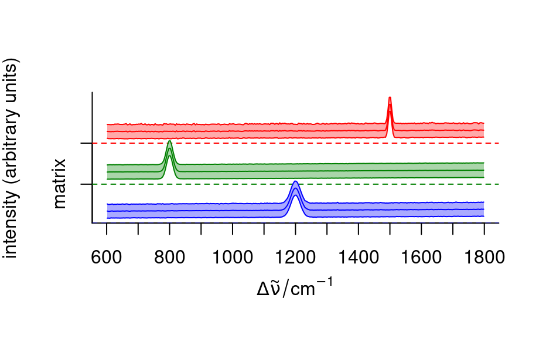
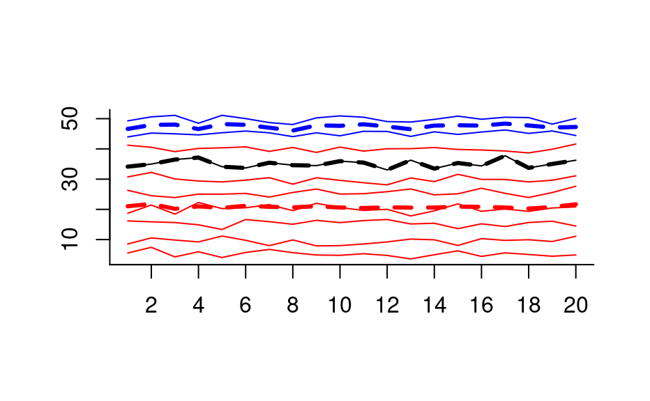
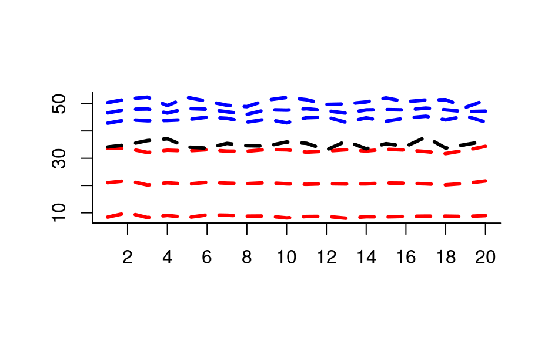
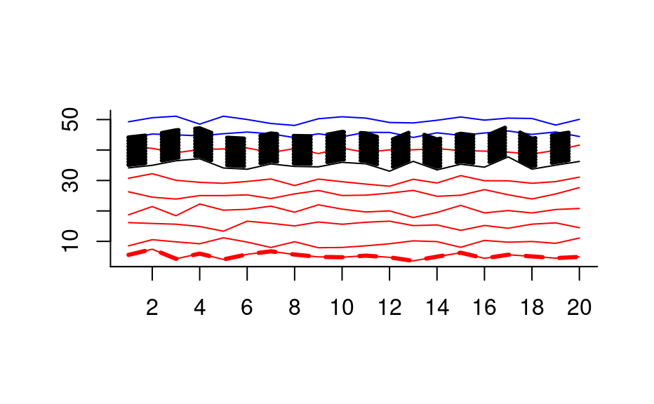

Compute summary statistics for subsets of a hyperSpec object.
hyperSpec object.
grouping for the rows of x@data.
Either a list containing an index vector for each of the subgroups
or a vector that can be split in such a list.
function to compute the summary statistics
further arguments passed to FUN
number of rows in the resulting hyperSpec object,
for memory pre-allocation.
If more rows are needed, how many should be appended?
Defaults to 100 or an estimate based on the percentage of groups that
are still to be done, whatever is larger.
If a list is given in by: does the list already
contain the row indices of the groups? If FALSE, the list in
by is computed first (as in stats::aggregate()).
A hyperSpec object with an additional column @data$.aggregatetracing which group the rows belong to.
aggregate() applies FUN to each of the subgroups given by by.
It combines the functionality of stats::aggregate(), base::tapply(),
and stats::ave() for hyperSpec objects.
aggregate() avoids splitting x@data.
FUN does not need to return exactly one value. The number of
returned values needs to be the same for all wavelengths (otherwise the
result could not be a matrix), see the examples.
If the initially pre-allocated data.frame turns out to be too small,
more rows are appended and a warning is issued.
region.means <- aggregate(faux_cell, faux_cell$region, mean_pm_sd)
plot(region.means,
stacked = ".aggregate", fill = ".aggregate",
col = palette_matlab_dark(3)
)

## make some "spectra"
spc <- new(
"hyperSpec",
spc = sweep(matrix(rnorm(10 * 20), ncol = 20), 1, (1:10) * 5, "+")
)
## 3 groups
color <- c("red", "blue", "black")
by <- as.factor(c(1, 1, 1, 1, 1, 1, 5, 1, 2, 2))
by
#> [1] 1 1 1 1 1 1 5 1 2 2
#> Levels: 1 2 5
plot(spc, "spc", col = color[by])
## Example 1: plot the mean of the groups
plot(aggregate(spc, by, mean), "spc",
col = color, add = TRUE,
lines.args = list(lwd = 3, lty = 2)
)

## Example 2: FUN may return more than one value (here: 3)
plot(aggregate(spc, by, mean_pm_sd), "spc",
col = rep(color, each = 3), lines.args = list(lwd = 3, lty = 2)
)

## Example 3: aggregate even takes FUN that return different numbers of
## values for different groups
plot(spc, "spc", col = color[by])
weird.function <- function(x) {
if (length(x) == 1) {
x + 1:10
} else if (length(x) == 2) {
NULL
} else {
x[1]
}
}
agg <- aggregate(spc, by, weird.function)
#> Warning: At3of3levels: Output data.frame too small. Consider using anappropriate value for out.rows to speed up calculations.
agg$.aggregate
#> [1] 1 5 5 5 5 5 5 5 5 5 5
#> Levels: 1 2 5
plot(agg, "spc",
add = TRUE, col = color[agg$.aggregate],
lines.args = list(lwd = 3, lty = 2)
)
